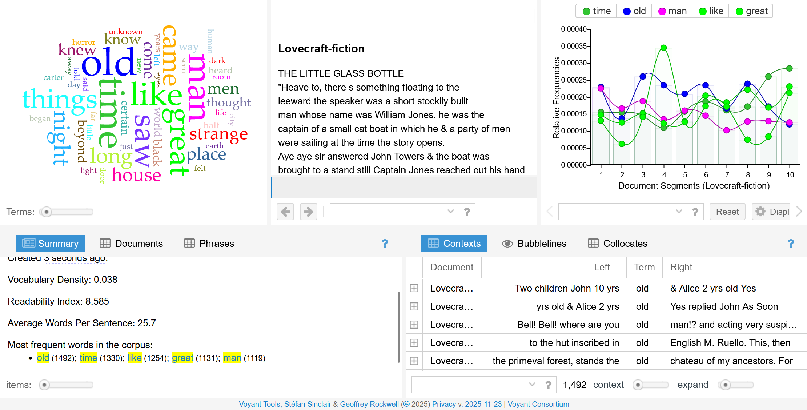
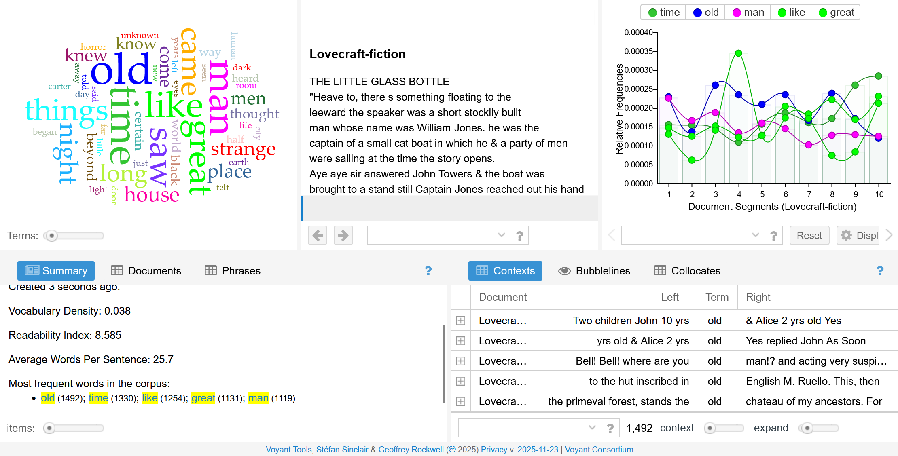
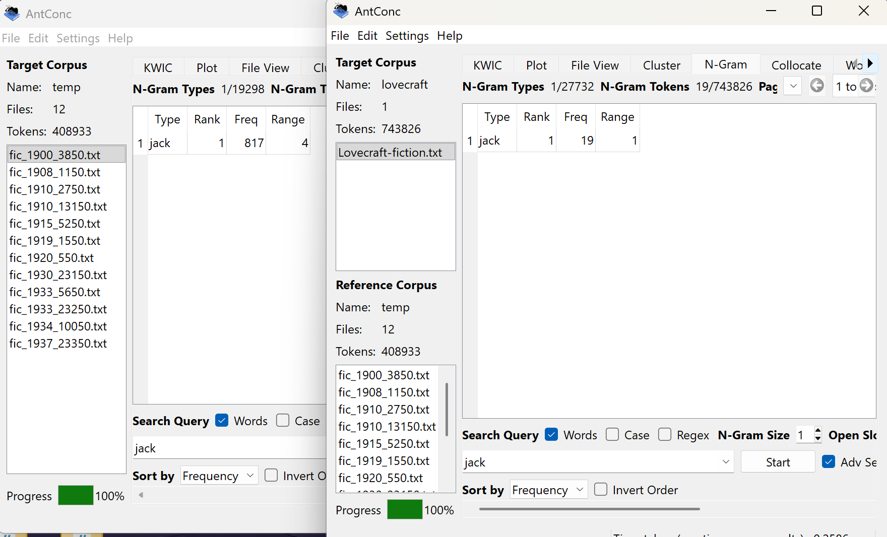
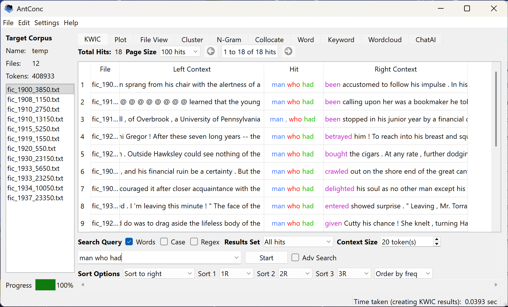
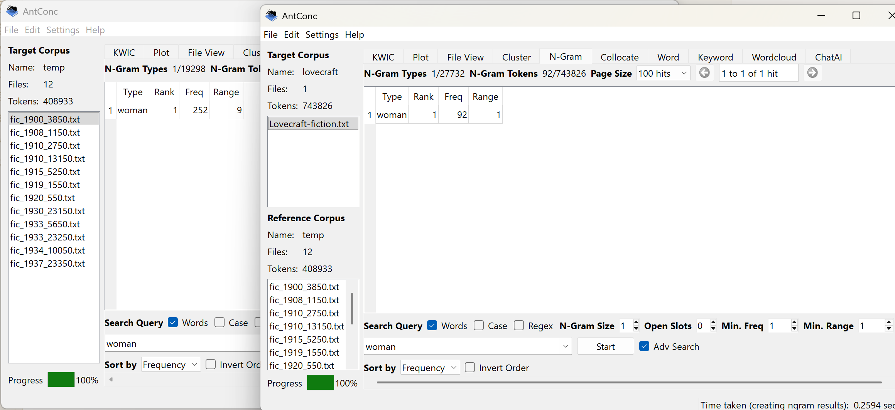

The Craft of Lovecraft
An exploration of Lovecraft and the literature of his time.
For this assignment I compared H.P. Lovecraft’s fiction with the sample COHA texts ranging from 1900-1937 (roughly the span of his writing career). I consider Lovecraft's work to contain plenty of unusual words, so I figured it might be interesting to explore the cross-section between his work and the time-period he lived/worked in.
Voyant: A Quick Overview
 

I started with Voyant, assuming it would give me the best visual perspective. While there is a lot of info on the page, I went straight to the word cloud. It's here that words like "man" and "know" stick it for the COHA image while "man" and "time" are two of the most prominent words for Lovecraft's section. Of course, being the egoist I am, I began with "Jack" (featured in the COHA collection).
AntConc: Names

One of the most popular words in the COHA collection was Jack with a magnificent 817 returns, while Lovecraft has only a meager 19 returns. This led to a quick overview of Lovecraft's fictions in order to find the most common name: (Randolph) Carter. Interestingly, Carter only appears one time in the COHA collection. This surprised me enough to try restarting AntConc, but the only Carter is someone by the name of Sydney Carter. Looking into popular baby names from the 1900s-1940s (courtesy of the Social Security Administration website), Jack tended to waver around 29th-17th place while Carter didn't appear in the top 200 baby names regardless of the decade! However, Carter(being the last name of both characters) does show up as the 40th most common last name in the U.S. according to the 1990 census with
AntConc: "Man Who Had"

Returning to the most salient, and somewhat distinct, perpetrator that can be found in both collections: "man." With a total of 1,025 hits in the COHA collection and 1,119 in Lovecraft's, the word "man" carries its own weight. Particularly, "man who had" which happened to be one of the longest--yet prevalent--tokens with "man" in both collections. In this KWIC you can how this phrase is used, often to denote a certain man that did something. With so many men, where are all the women?
AntConc: "Woman Who Had (Nothing?)"

With a staggering 334,893 more tokens to scan through, Lovecraft's use of the word "woman" still falls short by 160 hits (not to be ammended by the sub-35 sum of "lady," "women," "ladies," and "female"). What's the deal Lovecraft? Apparently, Lovecraft's poor representation of women is nothing new and perhaps not entirely surprising if you know anything about the man. Lovecraft is well-known as harboring many xenophobic and racist ideals, but upon closer inspection, it appears that Lovecraft wasn't the complete hate-filled buffoon that he's commonly purported to be. This could be, in part, due to the dissilution of his more hateful perspectives in later years as he surrounded himself with more and more progressive thinkers. Yet, the fact of the matter remains the same: some eldritch female representation would be well appreciated Mr. Lovecraft.